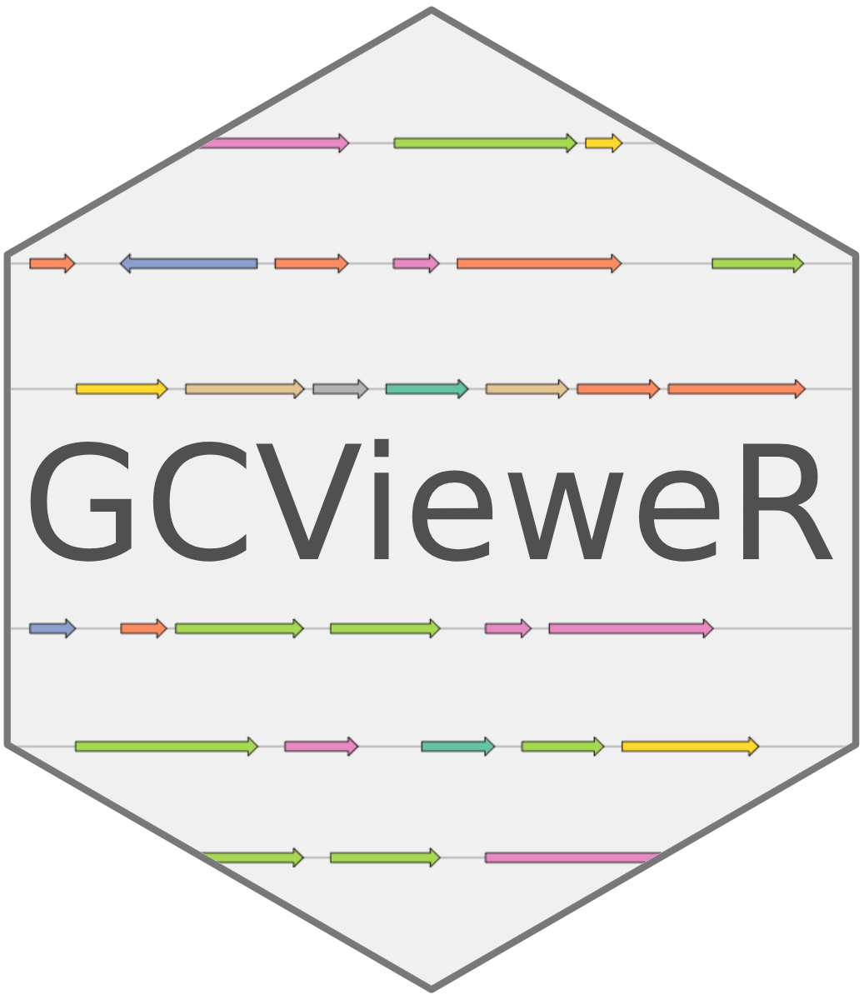

GCVieweR - Interactive Gene Cluster Visualizations in R
GCVieweR
GCVieweR provides a streamlined tool for visualizing gene clusters in R, with capabilities for comparing multiple clusters, customizing color schemes, and adding labels, annotations, and interactive tooltips for enhanced genomic data analysis.
Installation
You can install the development version of GCVieweR from GitHub with:
# install.packages("devtools")
devtools::install_github("nvelden/GCVieweR")Example
The below example demonstrates using GCVieweR to plot a gene cluster on a genomic sequence, using the start and stop positions of each gene. The genes are grouped by class. Additional functions are used to include a title, labels, legend, and a scale bar.
library(GCVieweR)
# Data
gene_cluster <- data.frame(
name = c("ophB1", "ophC", "ophA", "ophD", "ophB2", "ophP", "ophE"),
start = c(2522, 5286, 9536, 12616, 13183, 19346, 20170),
stop = c(4276, 4718, 10904, 11859, 15046, 16016, 21484),
class = c("Monooxygenase", "NTF2-like", "Methyltransferase",
"O-acyltransferase", "Monooxygenase", "Prolyloligopeptidase",
"F-box/RNHI-like")
)
# Chart
GC_chart(gene_cluster, group = "class", height = "200px") %>%
GC_title("omphalotin gene cluster") %>%
GC_labels("name") %>%
GC_legend(position = "bottom") %>%
GC_scaleBar() %>%
GC_clusterLabel(title = "ophA")